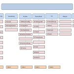

Ordnung auf Laufwerken-praktische Umsetzung
In vielen Unternehmen, egal welcher Größe, klagen die Mitarbeiter darüber, dass sie Ordnung auf Laufwerken vermissen, Chaos herrscht, sie ewig suchen müssen, bis sie die gesuchten Informationen finden, selten sicher sind, dass es die aktuellste Version der Datei ist und hin und wieder in der Versionsflut unterzugehen drohen. Der Ruf nach Ordnung in den elektronischen Dateien wird immer lauter. Vielerorts herrscht inzwischen schon ein Einsehen, dass es so nicht weitergehen kann, weil mit diesem ständigen Suchen enorm viel Zeit verschwendet wird. Verzweifelte Mitarbeiter beginnen sich Gedanken über eine Lösung zu machen. Nachdem häufig interne Projekte, die Lage zu verbessern gescheitert sind, fangen die Mitarbeiter an, nach externer Hilfe zu googeln. Ein Suchbegriff womit viele Menschen auf unserer Seite landen ist: „Chaos auf den Laufwerken“, „Ordnerbeschriftung“ und „Dateibenennung“.
Ich erlebe es kaum noch, dass sich Mitarbeiter gegenüber der Idee, Ordnung in’s Dateichaos zu bringen, verschlossen zeigen. Vielmehr werde ich manchmal wie ein Heil bringende Fee, eine Ordnungsfee empfangen. Die Menschen erhoffen sich endlich Erleichterung im Arbeitsalltag beim Umgang mit der oft überwältigenden elektronischen Informationsflut. Eine einfache und logische Datenstruktur kann da schon Erleichterung bringen.
Strukturanalyse
Im ersten Schritt schauen wir uns direkt vor Ort in den jeweiligen Dateiverzeichnissen die Strukturen an und können anhand des Vorgefundenen schon eine Idee entwickeln, welchen Umfang ein Projekt der Dateineu-, bzw. Umstrukturierung haben wird. In einem ersten Gespräch mit einigen Mitarbeitern erfahren wir mehr über Informationsflüsse und organisatorischen Engpässe im Unternehmen. Thema sind auch immer die bisherigen Versuche und/oder Gründe des Scheiterns, Klarheit in die Dateistrukturen zu bringen. Insbesondere in großen Firmen ist es wichtig, bei dem Projekt der Dateistrukturierung die IT-Abteilung im Boot zu haben, da diese notwendig ist, beim Thema Laufwerkeinrichtung und Zugriffsberechtigungen und sehr hilfreich sein kann bei der praktischen Umsetzung.
Konzept/Angebot
Nach dem ersten Termin vor Ort erstellen wir ein Konzept/Angebot, wie die Chaosbeseitigung auf den Laufwerken von statten gehen kann, was zu tun ist, um die Entstehung von Chaos zukünftig zu verhindern, wie lange das Projekt dauert und was es kostet.
Umsetzung in Workshops
1. Entwickeln eines neuen Aktenplans
In den meisten Fällen führen wir das Projekt in Form von Workshops mit mehreren Mitarbeitern durch. In diesen Workshops entwickeln wir den idealen Aktenplan. Schritt für Schritt entsteht auf einem großen Whiteboard oder auf großen beschreibbaren Folien an der Wand eine neue Struktur. Was zunächst sehr einfach klingt ist harte Arbeit und Verhandlung. Und das umso mehr, je mehr Mitarbeiter beteiligt sind. Dennoch macht es sehr viel Sinn, mehrere Mitarbeiter (ganze Abteilungen oder jeweils eine Person aus einer Abteilung) an der Entwicklung zu beteiligen, da mehrere Sichtweisen und verschiedenen Nutzung die Bedürfnisse klarer werden lassen.
2. Wichtige Fragestellungen
Während dieser Workshops zeigen sich immer wieder große Unsicherheiten bei der Datei- und Ordnerzuordnung weil z.B. folgende Fragen nie geklärt und kommuniziert wurden:
- Was ist im Unternehmen, in der Abteilung überhaupt ein Projekt?
- Ab wann ist ein Projekt eine Projekt und nicht mehr in der Akquise?
- Wann genau gilt ein Projekt als abgeschlossen?
- Ab wann ist ein Kunde Kunde, ab Vertragsunterzeichnung, ab der ersten Angebotsübersendung?
- Was ist der Unterschied zwischen Kunde und Projekt?
Manchmal ist nicht einmal klar, strukturieren wir nach Kunden oder Projekten. In großen Konzernen kommt es auch schon mal vor, dass in einzelnen Abteilungen, die Frage „Wer ist überhaupt ihr Kunde“ zu großer Verunsicherung führt. Aber das ist ein anderes Thema…….
Aber auch konkrete Fragestellungen sind oft unklar:
- Wer ist zuständig für die Ordnerstruktur?
- Gibt es einen Aktenplan oder Regeln, die irgendwo nachlesbar sind?
- Wer nutzt die jeweiligen Ordner in welcher Form?
- Welche Berechtigungen sind vergeben, können vergeben werden?
- Gibt es Archivierungsregeln und wenn ja welche?
Auf all diese Fragen finden wir in den Workshops Antworten sowie logische und praktikable Lösungen.
Auch wenn jeder Aktenplan unternehmenstypisch und/oder abteilungstypisch ist, gibt es doch einige Grundregeln der Ordnerstruktur- und Bezeichnung mit denen die Mitarbeiter während des Workshops vertraut gemacht werden. Außerdem einigen wir uns auf Regeln der Dateibezeichnung.
Projektplan

Ordnerstruktur in Power Point
Wir entwickeln gemeinsam einen Zeitplan für das Projekt und vergeben konkrete Verantwortlichkeiten für die Einrichtung einer neuen Struktur.
Es ist sinnvoll, zunächst einen Aktenplan in Power Point, Excel, Visio oder auch als „Hülse“ zu visualisieren und den Mitarbeitern noch einmal vorzustellen. Der nächste Schritt ist die Umsetzung im Explorer und eventuell nochmalige Präsentation vor den Mitarbeitern. Es wird ein Termin festgelegt, ab wann der neue Plan gelten soll.
Auf keinen Fall sollte versucht werden, alle alten Dateien oder Ordner in das neue System zu überführen. Das wäre unverhältnismäßig viel Aufwand. Es geht ja bei einer neuen Struktur auch darum, den „Datenmüll“ loszuwerden.
Arbeiten mit der neuen Datenstruktur
Am effizientesten und elegantesten ist es, wenn ab Tag „X“ nur noch die aktuell benötigten Dateien aus dem alten System geholt werden und entsprechend den neuen Regeln abgelegt werden. Dem Funktionieren dieser Maßnahme kann nachgeholfen werden, wenn die IT-Abteilung bei dem alten Laufwerk eine reine Leseberechtigung einrichtet. Sicherlich wird der eine oder andere Mitarbeiter damit nicht ganz einverstanden sein, aber die Erfahrung hat gezeigt, dass es immer wieder Mitarbeiter gibt, die aus Zeitnot oder Bequemlichkeit in den alten Strukturen arbeiten.
Auf den vier obersten Ebenen sollten auch Zuständigkeiten und Berechtigungen vergeben werden, wer Ordner anlegen oder löschen darf.
Wenn jeder Mitarbeiter Ordner nach Belieben Ordner anlegen darf, kann das schnell ins Uferlose führen, weil manche Mitarbeiter die Tendenz haben, wenn immer sie nicht wissen wohin mit einer Datei, einen neuen Ordner anzulegen, mit dem natürlich dann wiederum der nächste Mitarbeiter auch nichts anfangen kann.
Je nach Größe des Unternehmens kann die Planung und Umsetzung des Projektes „Ordnung auf den Laufwerken“ zwischen 3 und 10 Workshops und zwischen einem Monat und einem halben Jahr dauern.
Parallel zu den Workshops sorgen wir immer für eine entsprechende Dokumentation der getroffenen Absprachen und Regeln, woraus manchmal das nächste Projekt erwächst: ein Organisationshandbuch.
Gefahren auf dem Weg zur Umsetzung
Im Prinzip ist ein neuer Aktenplan kein Hexenwerk, aber es gibt verschiedene Gründe warum dieses Projekt ohne externe Hilfe immer wieder scheitert:
- eine Neustrukturierung wird fachlich und zeitlich völlig unterschätzt
- es gibt nur unzureichende Kenntnis der Regeln und technischen Möglichkeiten
- es wird keine Zeitkapazität zur Verfügung gestellt
- es wird nur ein Mitarbeiter mit einem viel zu großen Projekt beauftragt
- man erwartet die Erledigung dieser sehr anspruchsvollen Aufgabe nebenbei
- es werden zu wenige Mitarbeiter die mit den Daten arbeiten, beteiligt
- die Beauftragten müssen sich viel Kritik von den Nichtbeteiligten anhören, das frustriert
- es gibt keinen Zeitplan
- sollte es Workshop stattfinden, werden schnell die lauten ungeduldigen Mitarbeiter die leisen aber organisatorisch kompetenteren übertönen
- Propheten im eigenen Land werden selten gehört
- es ist generell nicht leicht, alte Ablagegewohnheiten loszuwerden und sich im hektischen Alltag an neue Strukturen zu gewöhnen
Externe Beratung
Aus all diesen Gründen ist es sinnvoll, sich externe Beratung zu holen. Externe Berater liefern fachlichen Input, moderieren, gleichen aus, stellen unbequeme Fragen, haben zu jedem Zeitpunkt das Ziel vor Augen und können „unerbittlicher“ die Erledigung der Teilschritte nachverfolgen.
Hier können Sie auch ein Seminar für den Einstieg buchen: Workshop Ordner- und Laufwerkstruktur
Weitere Artikel

KI als Copilot für die Assistenz
KI in Form von ChatGPT & Co sind hervorragende neue Werkzeuge im Office-Alltag, um produktiver und ja, auch kreativer, zu werden. Neugier statt Angst ist angezeigt im Umgang mit diesen Werkzeugen, die wie andere Werkzeuge auch …

Digitale Tools für Zusammenarbeit im Office
E-Mail, Digitale Ablage und eine Branchensoftware sind schon lange nicht mehr genug für effiziente Zusammenarbeit. Doch bevor Sie sich in einem Dschungel an digitalen Werkzeugen verlieren, sollten Sie sich über die Systematik …